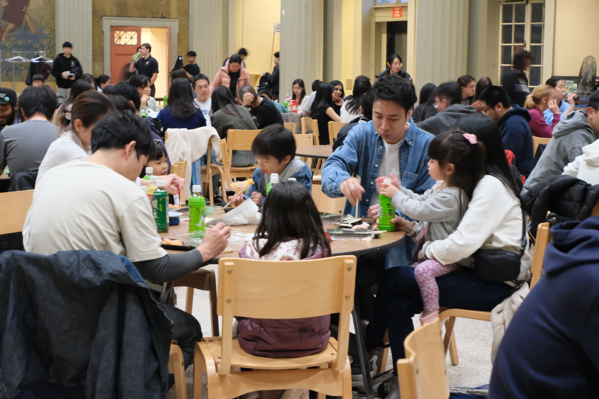
花見フェスティバル2026
終了・2026年5月9日
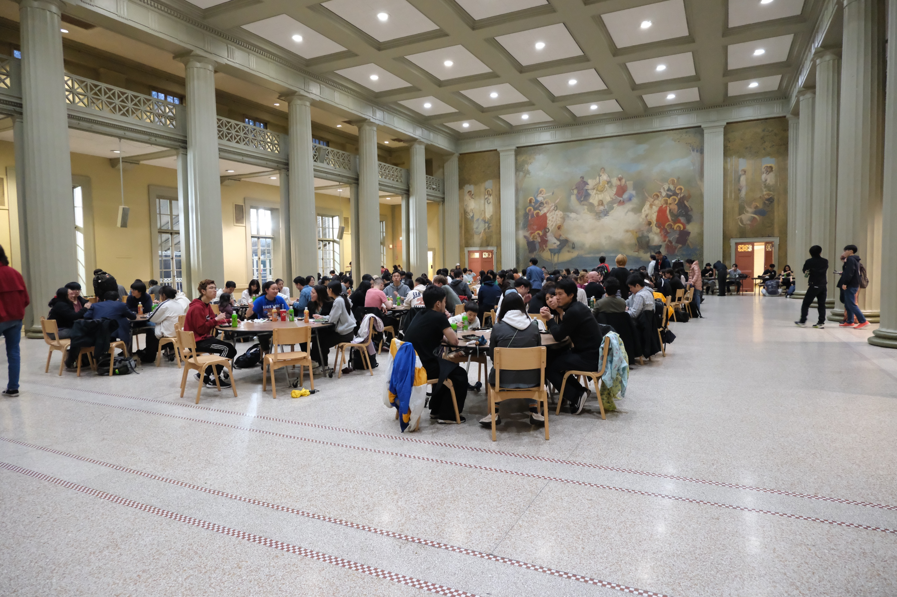
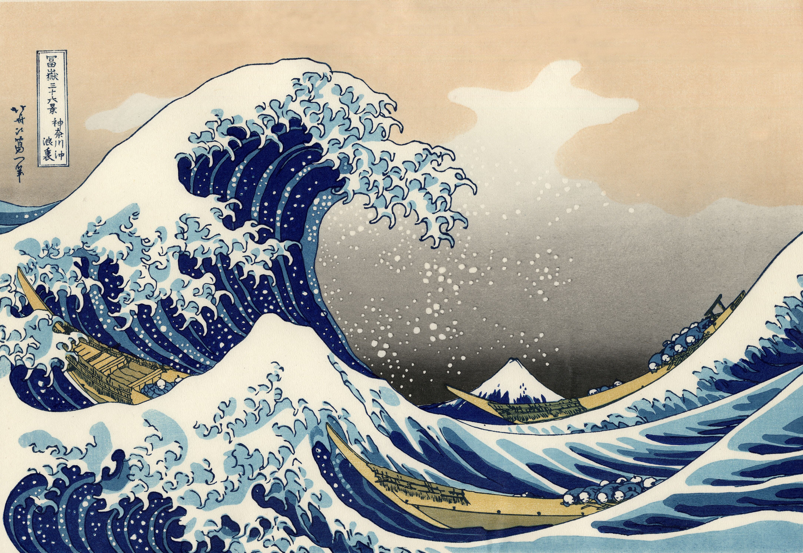
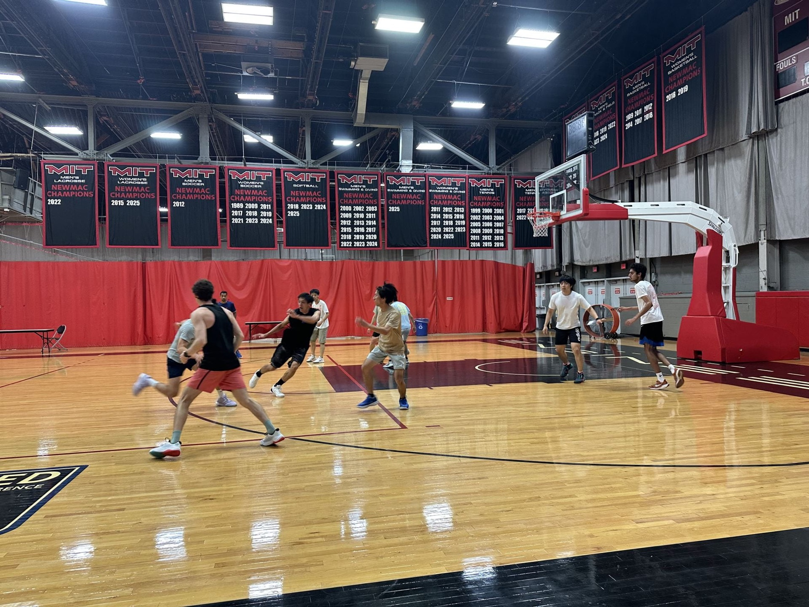
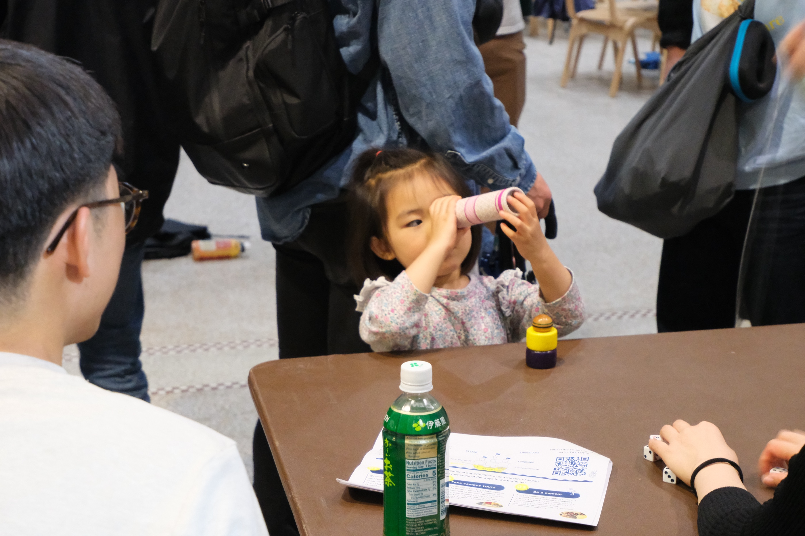
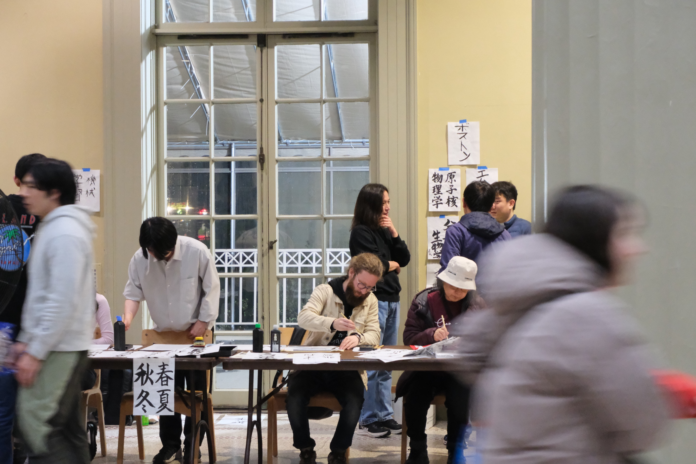
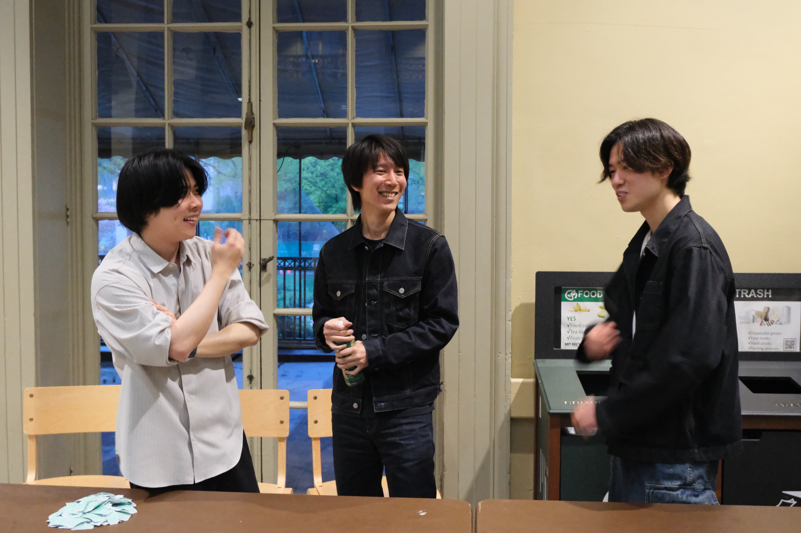
日本とMITをつなぐ。
JAM（Japanese Association of MIT）は、日本文化の紹介、MITコミュニティ内の交流、そして日本に根ざした視点からの学術的な対話を支える団体です。
開催中のイベントを見るJAMは歴史的にはMITの日本人PhD学生の小さなコミュニティとして始まりました。当時、MIT全体の日本人PhD学生はおよそ20名ほどでした。現在のJAMイベントは、より広いMITコミュニティに開かれています。
JAM規約 →目的
以下のミッションはJAM規約に基づき、MIT、日本、そして相互交流を中心に据えています。
MITコミュニティに日本文化を紹介し、広めること。
MITの大学院生、ポスドク、研究者、その他のコミュニティメンバーの間で、社会的なつながりと文化交流を育むこと。
MITのエコシステムの中で、日本の視点に根ざした学術的な発信と協働を促進すること。
2025-2026年度のJAM運営メンバーです。ここに掲載しているのはJAMプログラムを企画・運営する現在の運営メンバーであり、jam-all全体のメンバーではありません。運営メンバーはMITの大学院生、ポスドク、研究者、MITで学ぶHarvard大学院生、およびその家族に開かれています。
運営参加に興味がある方 →会長
副会長
会計
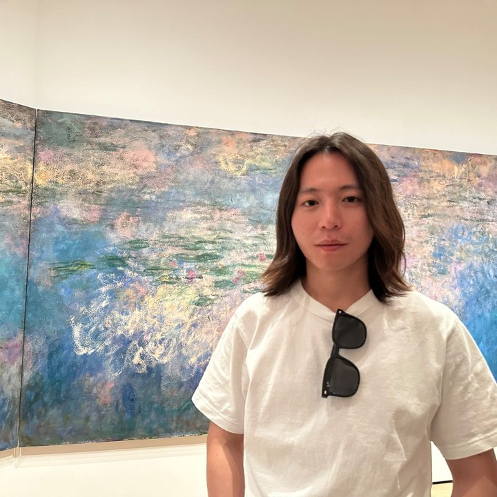
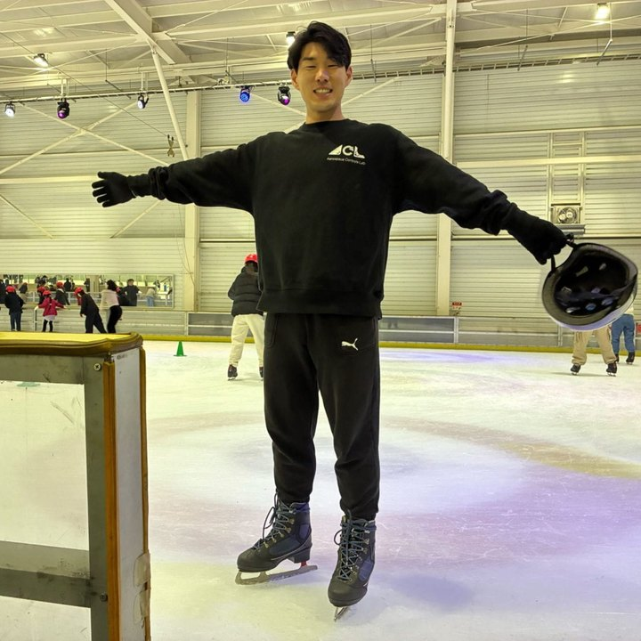
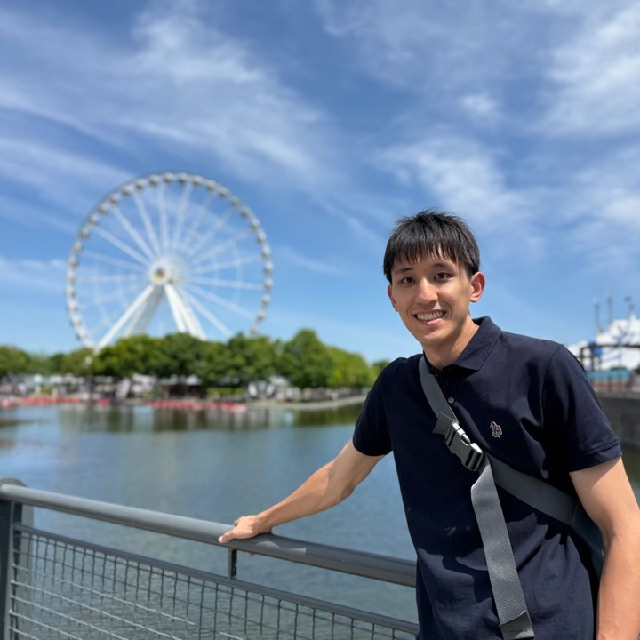
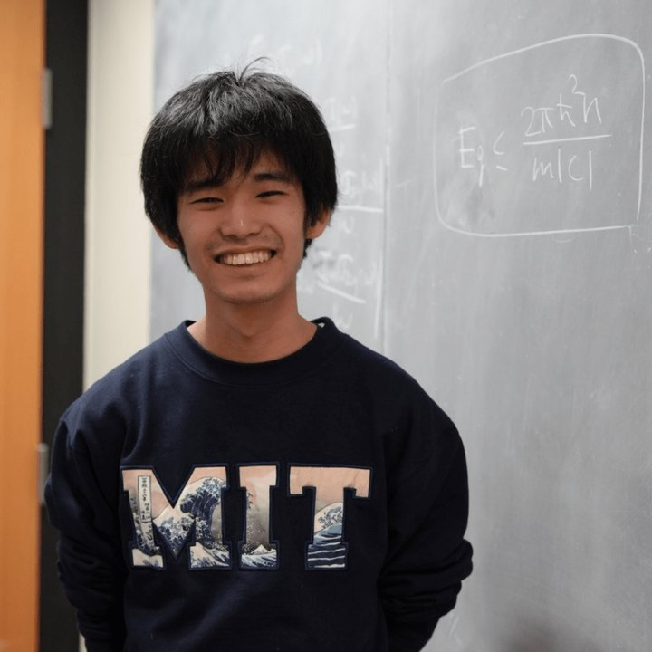
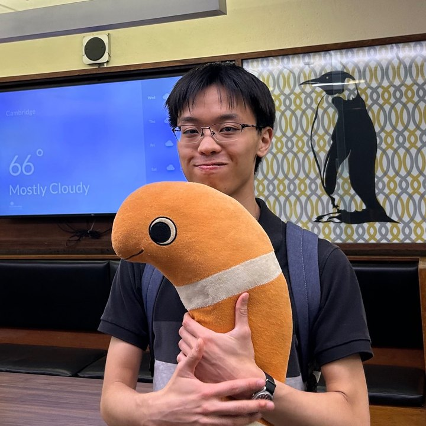
運営チームはMITの大学院生、ポスドク、研究者、MITで学ぶHarvard大学院生、およびその家族に開かれています。JAMはMITのAssociation of Student Activities（ASA）公認団体であり、学生自治上はGraduate Student Council（GSC）を母体としています。
運営メンバーに参加する →JAMのプログラムは運営チームが企画・運営し、イベント自体はより広いMITコミュニティに向けて開かれています。
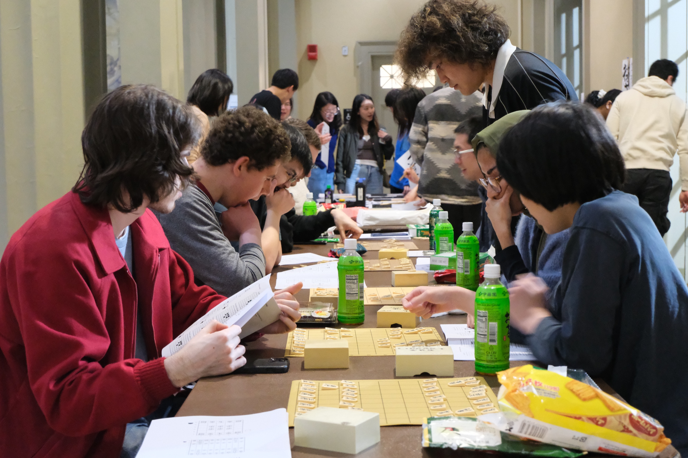
花見フェスティバルからBeneath the Great Waveのような講演型イベントまで、年ごとに積み重ねていける継続的なプログラムです。
約30名のメンバーが週末を中心にストリートバスケットボールを行い、MIT intramuralにも参加し、Boston Japan Basketball Clubとも年に数回対戦しています。
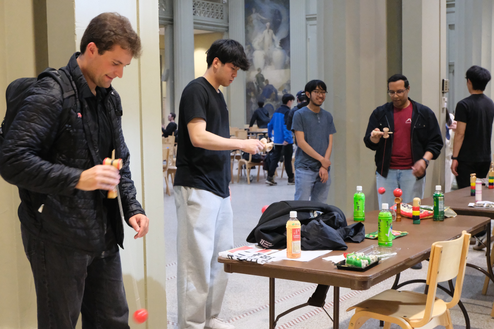
日本の高校生や、MITを内側から見学したい団体のキャンパス訪問をJAMがサポートしています。
支援
JAMへの支援は、主に個別イベントごとに組まれています。近年のJAMプログラムは、MIT SGFC Funding、MIT School of Quality of Life Grant Program、Taktopia、GPI-USなどから支援を受けています。Beneath the Great Waveは在ボストン日本国総領事館の後援を受けています。
JAMは、文化プログラム、講演会、新入生歓迎イベント、コミュニティ活動を支えてくださる新しい企業・団体パートナーも歓迎しています。